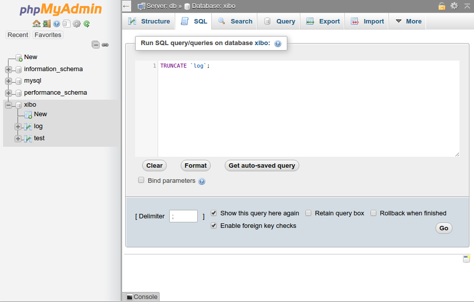
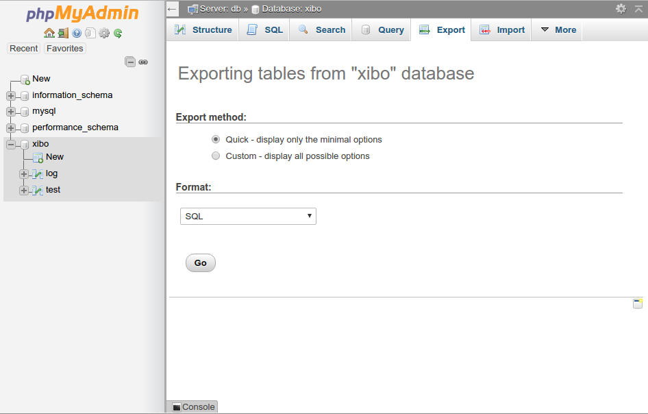

Switching to Docker
Installations prior to 1.8 will be "Custom/Manual" installations and should be migrated to Docker during the upgrade. Please follow the below instructions:
Review the Docker installation guide for your choice of platform which can be found here: Install CMS
Follow that guide, until you get to the step where the CMS is initially bootstrapped.
Do not run the docker-compose up command. When you get to that step, please return
here, and pickup.
If your server is already running a webserver, then you will need to pay specific attention to the instructions on running on custom port numbers.
Once you have Docker installed, and have extracted the Xibo Docker Release Archive, and created your config.env file, you should continue from this point.
In the same directory as you extracted the docker-compose.yml file, create the following
directory structure:
shared
|
- backup
- cms
|
- libraryCopy the library files from your existing install in to shared/cms/library - so for
example, you might have shared/cms/library/10.jpg.
On your existing Xibo installation, empty your log table by using the CMS Web Portal
to go to the Log page and clicking on Truncate, or by running TRUNCATE log from a
MySQL prompt with your Xibo database selected.
Export your database from your old installation by running the following,
e.g. mysqldump -u user -p database-name > shared/backup/import.sql
where user is the Xibo database user. You will be prompted for the password. You can find
both those values in the settings.php file in your old Xibo installation directory.
If you're not comfortable using the mysqldump command, then see the following section which covers using PHPMyAdmin if you have that available, however, please note that PHPMyAdmin is known to have issues exporting very large database backups reliably.
It is CRITICAL that your import.sql file contains only the Xibo database that you
wish to upgrade. It must not contain multiple databases. Specifically, it must not contain a
USE db_name command.
Save your 1.7 (or 1.8) database export as shared/backup/import.sql
We can now bring up the new CMS containers with your old data.
Run the following:
docker-compose up -dor if you're using a custom ports or remote mysql docker-compose file,
docker-compose -f custom.yml up -dwhere custom.yml is that custom file you've created.
That will cause the containers to be created for your database, web server and XMR server.
After a period of time (allow up to 10 minutes), you should see the CMS webpage appear at
http://localhost or http://localhost:port if you're running on a custom port.
Since we're importing a non-Docker based installation, there's a couple of additional steps to take which require direct modification of the database. If you're running with an external database, then please run the SQL commands listed below directly on your remote database instead of running these commands from inside the Docker console.
First, run docker ps to list all running docker containers, and find there the name of
the database container. It will be the one with web in the name - so for example
Xibo_cms-web_1.
Once you have the database container name, run the following to get to a shell inside the web container
docker exec -ti Xibo_cms-web_1 bashNext run the following
mysql -h mysql -u cms -p cmsYou will be prompted for a password. It will be the one that you chose in config.env for MySQL.
Assuming the correct password is entered, you'll be presented with a MySQL command prompt.
Run the following commands:
UPDATE `setting` SET `value`="/var/www/cms/library/", userSee=0, userChange=0 WHERE `setting`="LIBRARY_LOCATION";
UPDATE `setting` SET `value`="tcp://cms-xmr:50001", userSee=0, userChange=0 WHERE `setting`="XMR_ADDRESS";
UPDATE `setting` SET `value`="Apache" WHERE `setting`="SENDFILE_MODE";
exitRun exit again to return to your local machine shell.
Finally delete any files inside shared/cms/library/cache directory (you may need to use sudo
or be the root user on a Linux system to do so).
You should then be able to log on to the 1.8 web interface using an administrative user account. The passwords will be the same as your old 1.7 installation used.
Exporting with PHPMyAdmin
The example above uses mysqldump, however if your environment does not have
mysqldump it is possible to use phpmyadmin to generate a backup. Care must
be taken to ensure that a database is selected in the left hand pane before
going to the export tab. Failure to do this will result in the export containing
the existing database name, which may not match the new name in Docker.
Step 1:

Step 2:
